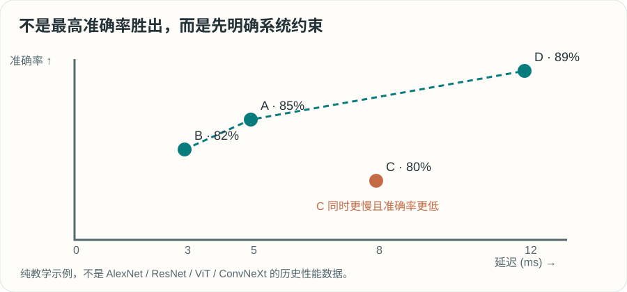
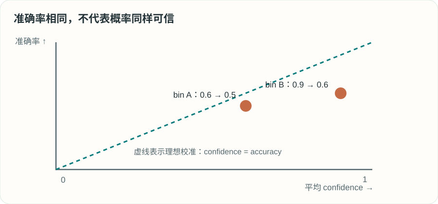
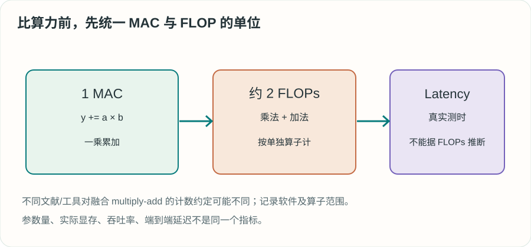
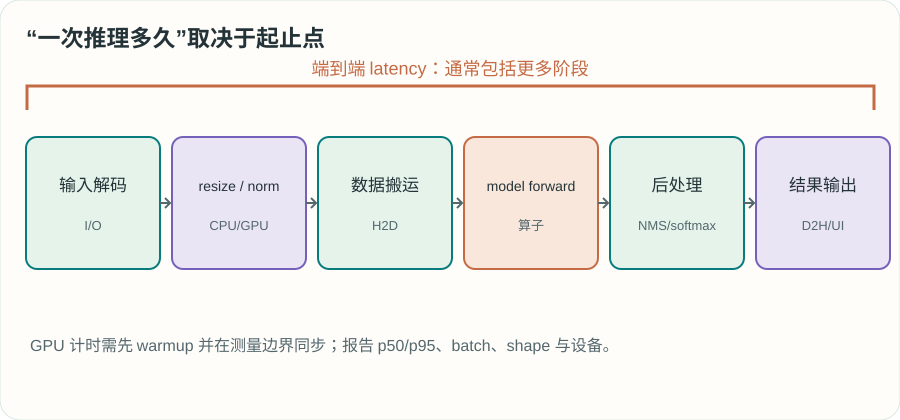

CHAPTER 14 · MEASUREMENT
视觉模型评估：让比较有意义
一个数字不能定义最好的模型。从性能口径、概率校准到计算与运行延迟，建立可重复的模型选型流程。
比较模型前，必须先决定“更好”是什么意思
准确率、参数量、乘加运算数、实际延迟、峰值内存、功耗与鲁棒性分别回答不同问题。一个模型在服务器 GPU 上 FLOPs 较少，未必能在手机 NPU 上达到较低的 latency；一个高 Top-1 的预训练权重也未必在新设备、低光或长尾样本下可靠。
真正的模型选型应先写出使用场景、硬件、输入分辨率、最大可接受延迟、内存上限、最低目标质量，再确定如何测量，而不是把不同论文的最高分排在一张榜单里。

Accuracy、Macro-F1、Top-k 与校准为什么互不替代？
单标签多分类的 Top-1 对每个样本只检查最高分类别是否正确；Top-5 判断真实类是否进入前五，且只有类别数不少于 5 时才有常规意义。类别不均衡时 macro-F1 会给每类等权，而总体 accuracy 容易被多数类主导；这些指标应同时附带每类支持样本数量与置信区间。
Softmax 输出可读作归一化分数，但不必然校准。如果 100 个预测都宣称 0.9 confidence，却只有约 60 个正确，就发生过度自信。Expected Calibration Error（ECE）通常按 confidence 分箱，再计算分箱 accuracy 与 mean confidence 差的加权和；其数值受分箱方式、样本规模和估计偏差影响，不应作为唯一校准评价。

N 是样本总数、n_b 为箱内样本数、acc_b 与 conf_b 为箱内经验准确率和平均置信度。
MACs、FLOPs 和参数量不是延迟
卷积层的理论 MACs 约为 H_out × W_out × C_out × (C_in/groups) × K_h × K_w（不计 bias 等）。若把一个 multiply-accumulate 拆成一次乘法加一次加法，常近似记为 2 FLOPs；有的工具把融合算子按一次或不同口径统计。比较表必须明示计数规则，否则 4 GMACs 与 4 GFLOPs 不能当作同一个值。

参数数目仅测权重大小，通常不包含执行图需要的中间激活、编译缓存和工作区；批大小从 1 增加到 32 后，延迟与吞吐率的变化也不同。INT8、FP16、bfloat16 和 FP32 不仅权重大小不同，算子覆盖率和定量精度也需要单独考察。
正确的延迟协议应包含什么？
CPU/GPU benchmark 需记录设备型号、线程数、推理模式、模型权重、批大小、输入 shape、warmup 次数、计时范围和重复次数。对 GPU 的异步执行，要使用适当同步或设备事件；否则 Python 计时测到的可能只是算子提交时间。统计通常报告 p50 与 p95，而不仅报最快一次。

相同精度下，内存访问密集的 depthwise 算子未必比理论计算更多的密集算子快。通过重复性测试来确定优化是否真实有效，不能靠 FLOP 排序做部署决策。
可运行例子：用 Pareto 支配关系筛模型
定义一个模型被另一个模型支配：后者准确率不低、延迟不高，且至少一个维度严格更优。下面仅计算四个虚构方案的 Pareto 前沿，和任何模型实际 benchmark 都无关。
models = {
"A": {"acc": 0.85, "latency_ms": 5.0},
"B": {"acc": 0.82, "latency_ms": 3.0},
"C": {"acc": 0.80, "latency_ms": 8.0},
"D": {"acc": 0.89, "latency_ms": 12.0},
}
def dominates(a, b):
return (a["acc"] >= b["acc"]
and a["latency_ms"] <= b["latency_ms"]
and (a["acc"] > b["acc"]
or a["latency_ms"] < b["latency_ms"]))
frontier = {name for name, value in models.items()
if not any(dominates(other, value)
for other_name, other in models.items()
if other_name != name)}
assert frontier == {"A", "B", "D"}
assert dominates(models["A"], models["C"])
print("pareto:", sorted(frontier))若新增能耗、模型大小、公平性或域外鲁棒性等维度，Pareto 前沿可能改变。更重要的是，输入精度的统计估计通常存在噪声，差别小于置信区间时不能简单排序。
如何制作不误导的选型报告？
| 项目 | 最低要求 |
|---|---|
| 任务/数据 | 来源、样本量、类别分布、验证/测试 split、许可证 |
| 模型/权重 | 架构版本、checkpoint、预训练数据、输入 transforms、precision |
| 准确率与可靠性 | top-1、macro-F1 或任务指标，区间估计和子群表现 |
| 计算与延迟 | MAC/FLOP 口径、参数、batch、硬件、计时范围、p50/p95 |
| 约束 | 内存峰值、能源预算、部署依赖和容错要求 |
检查理解：两个模型参数量和 FLOPs 一样，能否推断延迟也相同？
不能。算子实现、数据布局、设备带宽、缓存、batch、量化精度和 CPU/GPU 同步都可能改变实际延迟。
技术来源
图中模型 A–D 均为教学构造，不对应任何公开网络的真实测量，避免混用论文中的不同实验配方。